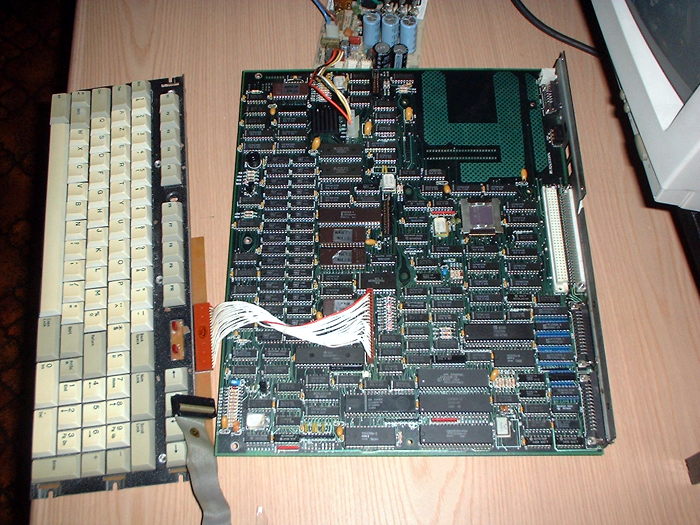
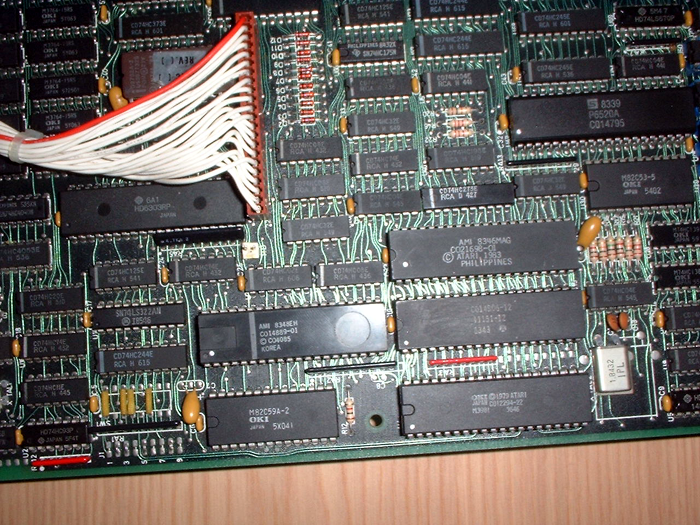
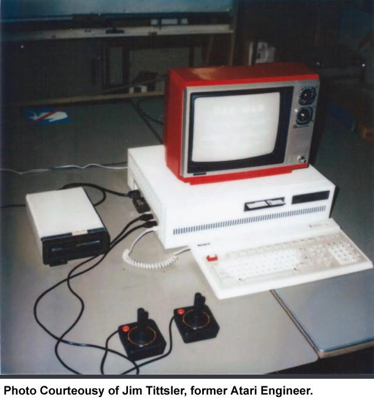

In April 1983 Atari makes one
of its boldest plans, to begin the design work on a dual processor
system with both the Atari 6502 "Sally" CPU and an Intel 8088 CPU.
This system would be an IBM compatible computer known as the Atari
1600XL. This was an impressive move forward by Atari's special
projects division. Atari had just released its first new
computer system in 3 years, the Atari 1200XL in January. Back
in March the new specifications for the Atari 600XL and 800XL had
just been finalized and work had begun on those new systems.
Atari was now embarking on a very
ambitious new project. Project "Shakti" - the Atari 1600XL computer
system, model 25601. A computer that would have all of the features
of the Atari home computers, combined with the power and
expandability of an IBM PC. The system would have an
Interoperative section that allowed both CPU subsystems to share the
same peripherals and other hardware. Atari and Toshiba were in a
joint development agreement on this new system and it was
progressing along through the summer and its Hardware technical
specifications would receive their last updates in August of 1983.
Jim Tittsler was the lead engineer and Joe Miller was involved.
James Morgan would become the
new CEO of Atari and in the fall of 1983 he would pause and cancel
numerous projects. The Atari 1600XL would become a casualty of
the cancellations and its last design revisions were done in
November 1983 and the project was shelved.
However... some of the "Shakti's"
designs would carry over and live on in later years. Jim
Tittsler would be hired by the Tramiels and stay on at Atari and
design the Atari PC-1 which was an IBM compatible system.

Atari 1600XL
Motherboard

Close up view -
showing the Atari chipset
Another revision of the
1600XL shown here, thanks to Jim Tittsler, one of the engineers
of the joint Atari/Toshiba hybrid computer project. These
images show another revision, this time with ISA slots,
connected to an Atari 1050 disk drive and running an Atari Pac
Man cartridge.


Are you a former Atari engineer?
Did you work on the 1600XL or have direct knowledge of this project?
Please contact the Atari Museum:
CLICK HERE